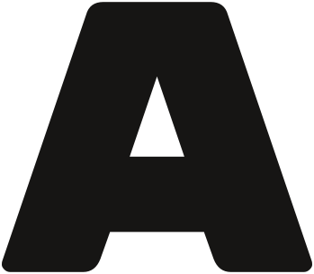
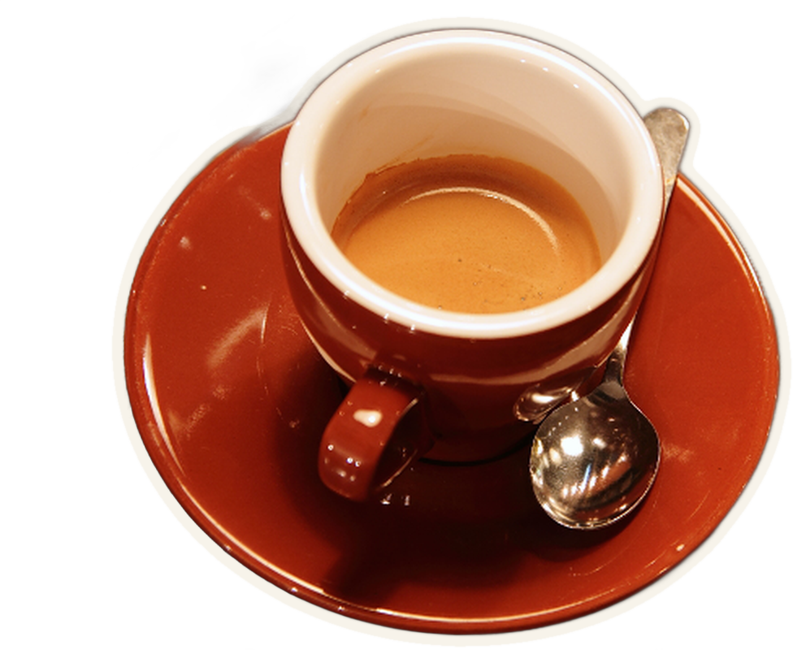

No. 6 isthe space issue!cover star: Biscuit
Sat 13 March
zine & small press fair11:00–18:00 · 60+ tablesThe Old Laundry, 22 Kettle Stpapercuts.example
P.S. free coffee till noon

Riso workshop 14:00